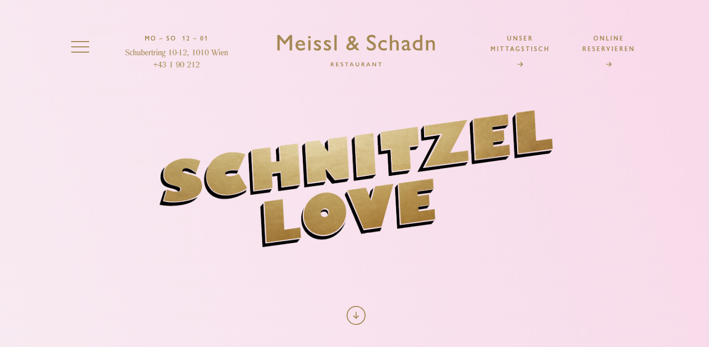

Home
About Me
Cv
Social
Models of good practice
Contact Me
This page was my inspiration to use a nice soft pink background

I have got a lot of inspiration from
this
specific page,Resumes of professionals.